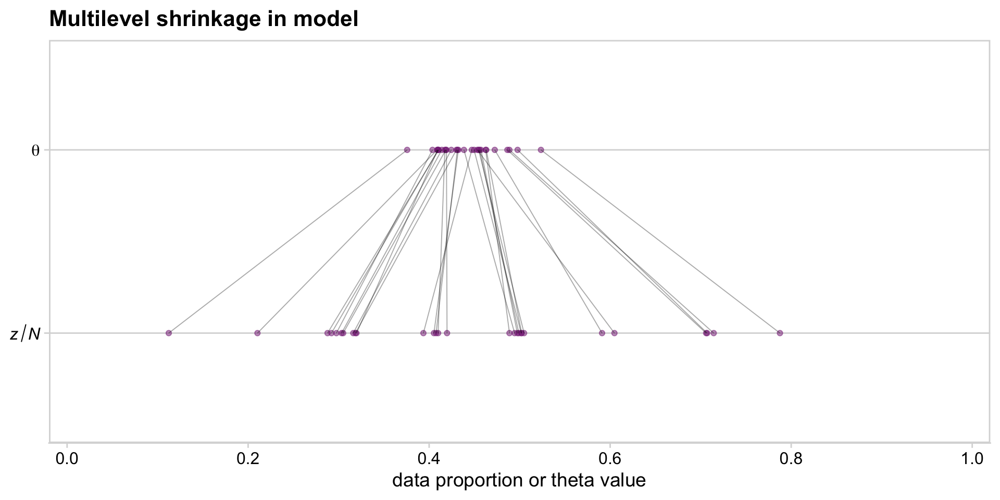
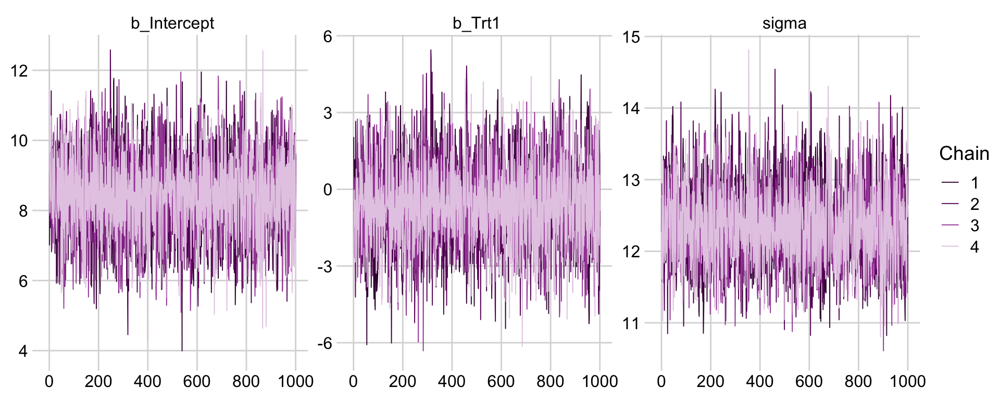
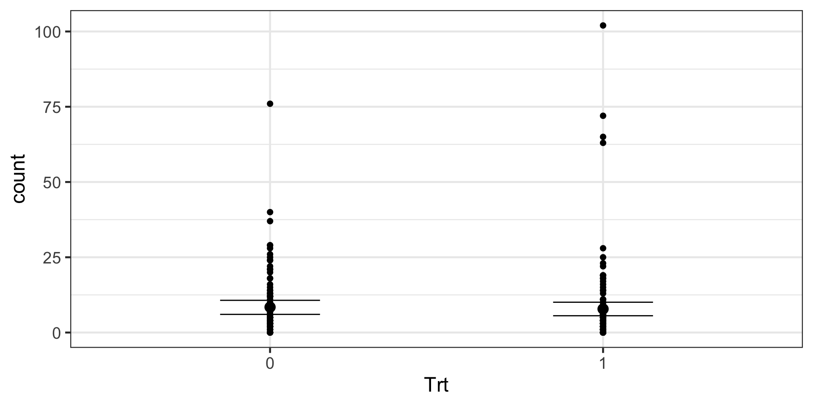
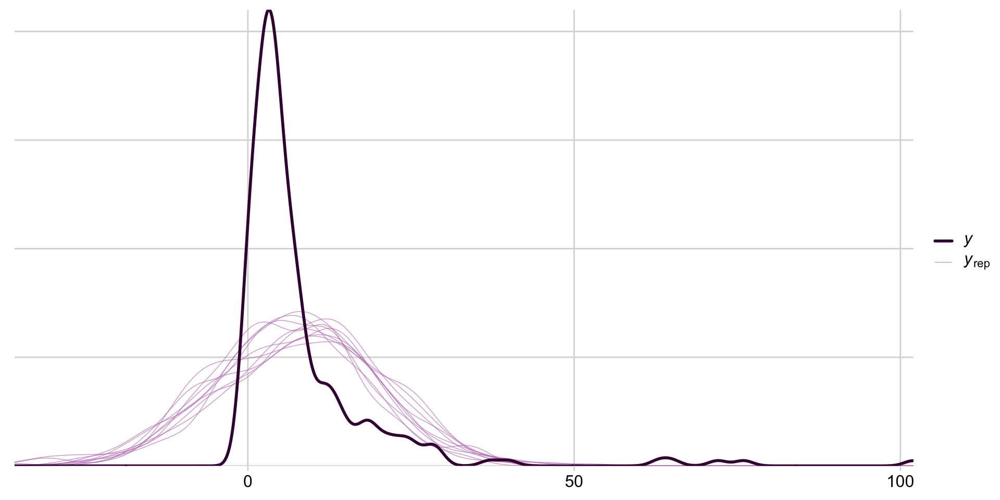
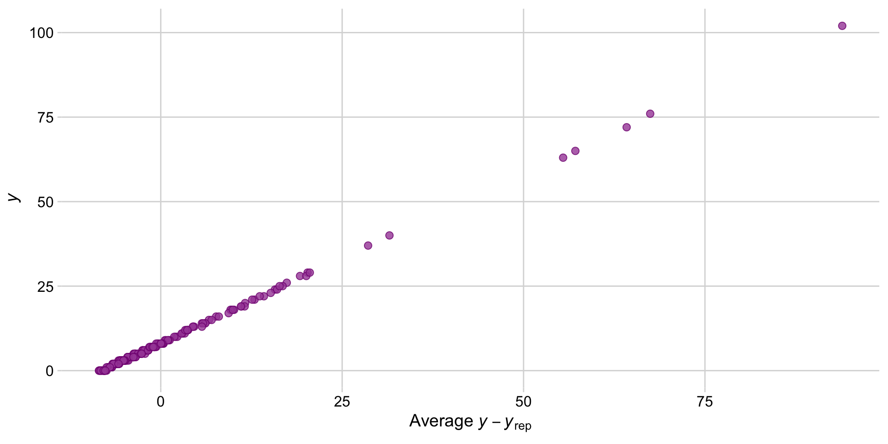
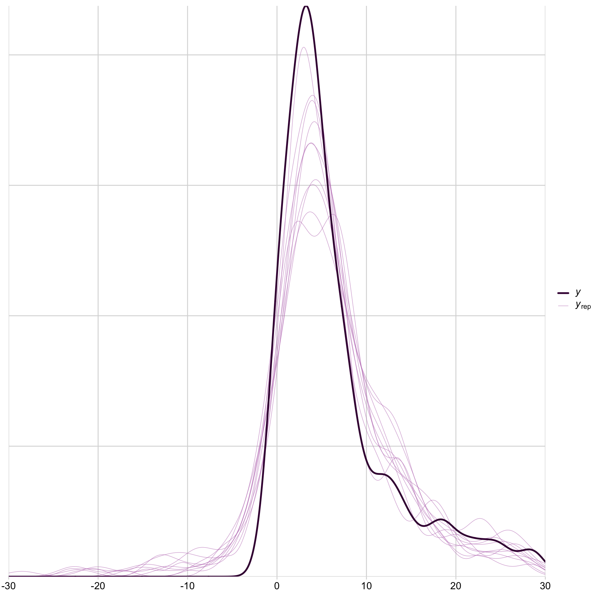
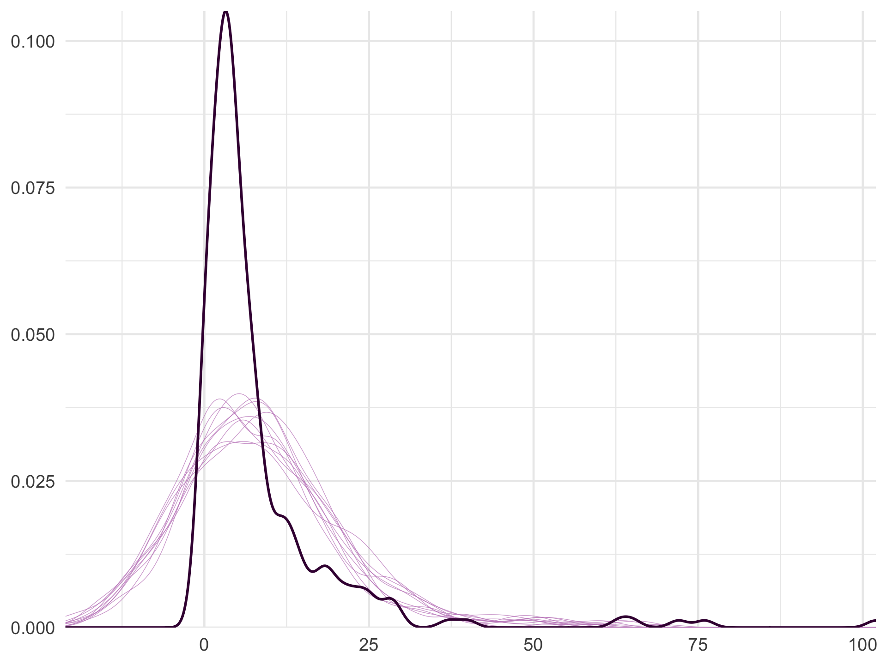
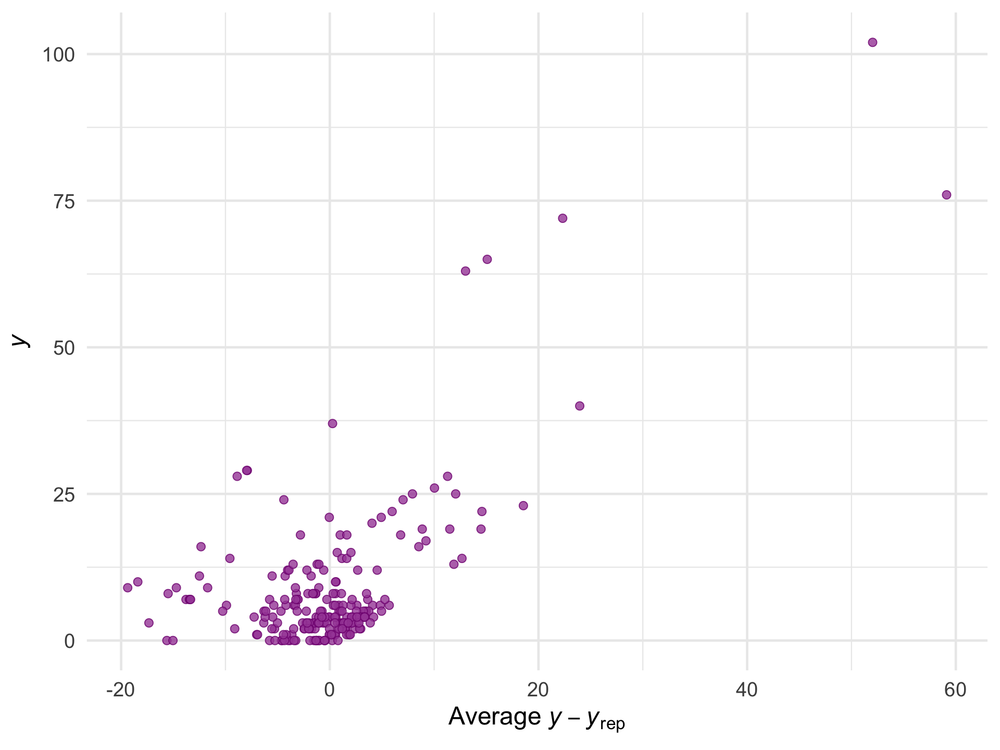
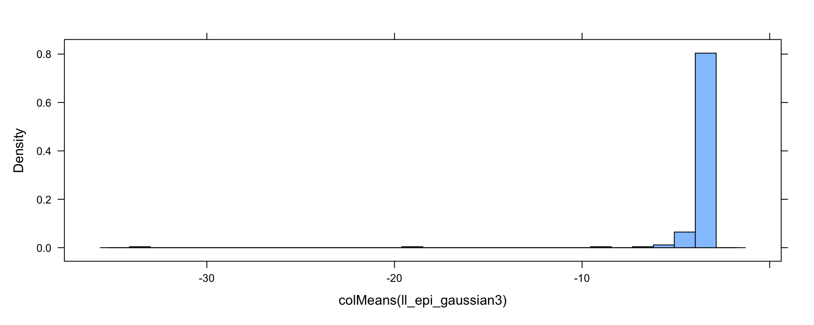

A statistical model \(M\) is a model of a random process that could have generated our observable data. The observable data \(\mathcal{D}\) contains both dependent variables \(\mathcal{D}_\mathrm{DV}\) and independent variables \(\mathcal{D}_\mathrm{IV}\)
A model \(M\) for data \(\mathcal{D}\) fixes a likelihood function for \(\mathcal{D}_\mathrm{DV}\). The likelihood function often has parameters, represented by a parameter vector \(\theta\).
Using Bayes rule we can estimate the model parameters \(\theta\) from the data
Recall that for a linear regression \(y\sim \mathcal{N}(\beta x,\sigma^2)\) the likelihood of any one observation \(y_i\) is (with \(\theta\) representing the set of parameters)
\[
\pi\left(\left.y_{i}\right|x_{i},\beta,\sigma^{2}\right)=\pi\left(\left.y_{i}\right|x_{i},\theta\right)=\frac{1}{\sqrt{2\pi\sigma^{2}}}e^{-\frac{(y_{i}-\beta x_{i})^{2}}{2\sigma^{2}}}
\] and the log-likelihood of \(N\) observations \(\{y_i\}_{i=1}^N\) is
where the parameters are \(\theta=\{\beta,\sigma^2\}\).
In words: the joint probability of the parameters given the observed volume data is equal to (to within a scaling constant) the probability of the observed volume data given the parameters, times the prior probabilities of the parameters. In practice we refer to the probabilities as likelihoods, and use log-likelihoods to avoid numerical problems arising from the product of small probabilities.
Max a posteriori estimate (MAPE)
The maximum a posteriori estimate of the parameters is
If \(\theta\) is not uncertain/random, then \(\pi(\theta)=1\rightarrow\log\pi(\theta)=0\) and the MAPE is equal to the MLE.
In linear regression we assume \(\pi(\sigma^2) = 1\), so If \(\theta\) is uncertain/random it remains to give a prior distribution to \(\beta\) (as a vector of dimension \(D\), in general). Assume \(\beta=\mathscr{N}\left(0,\lambda^{-1}I\right)\) (with a single scale constant \(\lambda\)), then
which turns out to be a linear interpolation between the prior mean and the sample mean weighted by their respective covariances.
Max a posteriori estimate (MAPE)
In this MAPE for linear regression, with Gaussian priors, the posterior is also a Gaussian, since the product of Gaussian distributions is proportional to a Gaussian distribution, and the denominator in Bayes rule reflects the proportionality.
However, this a special case where the likelihood and prior distributions are conjugate.
Conjugate priors
If the posterior distribution \(\pi_{\theta\vert\mathcal{D}}\) is in the same probability distribution family as the prior probability distribution \(\pi_\theta\) (generally this means they are the same to within a normalizing constant), the prior and posterior are then called conjugate distributions, and the prior is called a conjugate prior for the likelihood function \(\pi_{\mathcal{D}}\).
A conjugate prior is an algebraic convenience, giving a closed-form expression for the posterior.
Conjugate priors
example 1
Consider a random variable which consists of the number of successes \(s\) in \(n\) Bernoulli trials with unknown probability of success \(p\in[0,1]\). This random variable will follow the binomial distribution, with a probability mass function of the form
\[
\pi(s\vert p)={n \choose s}p^s(1-p)^{n-s}
\]
Conjugate priors
example 1
The usual conjugate prior for the Bernoulli is the beta distribution with parameters (\(\alpha, \beta\)):
where \(\alpha\) and \(\beta\) are chosen to reflect any existing belief or information (\(\alpha = 1\) and \(\beta = 1\) would give a uniform distribution) and \(\mathrm{B}(\alpha,\beta)\) is the Beta function acting as a normalising constant.
Conjugate priors
example 1
If we sample this random variable and get \(s'\) successes and \(f=n-s'\) failures, then we have
And the posterior distribution \(\pi_{\theta\vert\mathcal{D}}\) is in the same probability distribution family as the prior probability distribution \(\pi_\theta\).
Conjugate priors
example 2
Suppose you’ve been asked to find the probability that you have exactly 5 outages at your website during any hour of the day. Your client has limited data, in fact they have just three data points \(y=[3,4,1]\)
If you assume that the data are generated by a Poisson distribution (which has a single parameter, the rate \(\lambda\)), then the maximum likelihood estimate of \(\lambda\) is \(\lambda=\frac{3+4+1}{3}\approx 2.67\), and you would estimate the probability as:
We’ve assumed that the observed data \(y\) is most likely to have been generated by a Poisson distribution with MLE for \(\lambda= 2.67\).
But the data could also have come from another Poisson distribution, e.g., one with \(\lambda =3\), or \(\lambda =2\), etc. In fact, there is an infinite number of Poisson distributions that could have generated the observed data.
With relatively few data points, we should be quite uncertain about which exact Poisson distribution generated this data. Intuitively we should instead take a weighted average of the probability of \(\pi(y\ge 0|\lambda )\) for each of those Poisson distributions, weighted by how likely they each are, given the data we’ve observed.
This is exactly what Bayes’ Rule does.
Conjugate priors
example 2
Luckily, the Poisson distribution has a conjugate, the Gamma distribution:
so \(\pi\left(y\vert\lambda\right)\times \pi_\theta(x;\alpha,\beta)\sim \lambda^{n\bar{y}+\alpha-1}e^{-(n+\beta)\lambda}\sim\pi_\theta(\lambda;n\bar{y}+\alpha,(n+\beta))\)
Conjugate priors
example 2
Given our observations \(\lambda=\frac{3+4+1}{3}\approx 2.67\), we might arbitrarily take the prior as a Gamma with \(\alpha=9;\;\beta = 2\) (mean \(\alpha/\beta\)) so that the prior and posterior look like this:
Given the posterior hyperparameters, we can finally compute the posterior predictive distribution (\(\alpha=9+3\times2.67\), \(\beta=3\times2\), \(\mu=2.835\)) and estimate the 90% confidence intervals for the probability as 0.046, 0.175. This much more conservative estimate reflects the uncertainty in the model parameters, which the posterior predictive takes into account.
Conjugate priors
Conjugate priors offer ease of computation, efficiency in updates, and clear interpretation, making them suitable for simpler models or real-time applications.
However, they are often too restrictive for complex or non-standard models, where flexibility in capturing prior beliefs is crucial.
Conjugate priors
Limitations of Conjugate Priors
Restrictive Choice of Priors: Conjugate priors limit the choice of prior distributions to a specific family. This restricts flexibility, especially if real-world data suggests a prior belief outside the conjugate family, which may not accurately capture prior knowledge or uncertainty.
Lack of Flexibility with Complex Models: Conjugate priors are often insufficient for complex models, such as hierarchical or multi-level models, where dependencies between variables require more flexible priors. Non-conjugate priors, despite being more computationally intensive, can better accommodate the complexity of these models.
Potential for Over-Simplification: Choosing a conjugate prior for convenience can sometimes lead to oversimplification, especially if it does not match the true prior knowledge. This can introduce bias and reduce the model’s accuracy in reflecting genuine prior beliefs.
Less Suitable for Non-Standard Likelihoods: Conjugate priors work best with specific likelihood functions, and many real-world problems don’t have standard likelihoods that match conjugate prior forms. In these cases, using a conjugate prior may be infeasible, forcing the use of non-conjugate methods.
Generative (bayesian) modelling
Generative (bayesian) modelling
Generative Bayesian modeling is an approach in Bayesian statistics where we create models that describe how data is generated, often by specifying probability distributions for both observed and latent (unobserved) variables/parameters.
This process involves defining a generative process — a step-by-step probabilistic framework that models how data could have arisen.
Generative (bayesian) modelling
Note the similarity to DAGs:
Given a DAG, we next assign probability distributions to each node/variable, relate the nodes through the parameters of the distributions and finally assign priors for any remaining/undetermined parameters, including parameters used to define the relationships between variables.
Generative (bayesian) modelling
Key Components of Generative Bayesian Modeling
Defining Priors: Start by assigning prior distributions to parameters, reflecting prior beliefs about these parameters before observing data. Priors incorporate domain knowledge and regularize the model.
Likelihood Function: Specify the likelihood, which represents the probability of observing the data given the parameters. It describes how data is assumed to be generated given specific values of the model parameters.
Posterior Inference: Using Bayes’ theorem, combine priors and the likelihood to calculate the posterior distribution of the parameters. This posterior reflects updated beliefs after seeing the data.
Latent Variables and Hierarchies: Generative models can include latent variables, which represent unobserved or hidden factors, and hierarchical structures, which model data with multiple levels of variation (e.g., nested or grouped data).
Generative (bayesian) modelling
Advantages of Generative Bayesian Models
Interpretability: Generative models explicitly describe the data-generating process, making them interpretable and suitable for understanding complex systems.
Predictive Power: By learning the underlying structure of the data, generative models can predict unseen outcomes and infer missing or latent data.
Uncertainty Quantification: Bayesian models naturally quantify uncertainty in parameter estimates and predictions, enhancing decision-making with probabilistic insights.
Generative (bayesian) modelling
Limitations
Computational Complexity: Generative Bayesian models, especially those with complex hierarchical structures or latent variables, can be computationally demanding, often requiring methods like MCMC.
Model Specification: The accuracy of generative Bayesian models heavily depends on correctly specifying the generative process, which can be challenging with limited domain knowledge or complex data.
Applications
Generative Bayesian modeling is widely used in areas requiring a deep understanding of data-generating processes, such as healthcare, natural language processing, finance, and other business applications. It enables tasks like anomaly detection, missing data imputation, and causal inference by modeling the probability structure of observed and unobserved variables.
BRMS
Generative modelling with BRMS
BRMS (Bayesian Regression Models using Stan) is an R package for fitting complex Bayesian regression models using Stan, a powerful probabilistic programming language. BRMS provides a high-level, formula-based interface in R, making it easy to specify and fit Bayesian models.
BRMS is useful for performing complex Bayesian analyses in R without diving into raw Stan code.
We’ll start with a very simple example.
Generative modelling with BRMS
Basic model: manufacturing failures per \(N\) units
We express the likelihood for our coin toss example as
Family: bernoulli
Links: mu = identity
Formula: y ~ 1
Data: my_data (Number of observations: 50)
Draws: 3 chains, each with iter = 3834; warmup = 500; thin = 1;
total post-warmup draws = 10002
Regression Coefficients:
Estimate Est.Error l-95% CI u-95% CI Rhat
Intercept 0.31 0.06 0.20 0.44 1.00
Bulk_ESS Tail_ESS
Intercept 3865 4706
Draws were sampled using sampling(NUTS). For each parameter, Bulk_ESS
and Tail_ESS are effective sample size measures, and Rhat is the potential
scale reduction factor on split chains (at convergence, Rhat = 1).
Family: bernoulli
Links: mu = identity
Formula: y ~ 0 + s
Data: dat (Number of observations: 15)
Draws: 4 chains, each with iter = 2000; warmup = 500; thin = 1;
total post-warmup draws = 6000
Regression Coefficients:
Estimate Est.Error l-95% CI u-95% CI Rhat
sLondon 0.37 0.14 0.12 0.66 1.00
sWindsor 0.67 0.13 0.38 0.88 1.00
Bulk_ESS Tail_ESS
sLondon 5546 3535
sWindsor 5034 3757
Draws were sampled using sampling(NUTS). For each parameter, Bulk_ESS
and Tail_ESS are effective sample size measures, and Rhat is the potential
scale reduction factor on split chains (at convergence, Rhat = 1).
The value of \(\kappa\) governs how near \(\theta\) is to \(\omega\), with larger values of \(\kappa\) generating values of \(\theta\) more concentrated near \(\omega\).
Generative modelling with BRMS
Using \(s\) for shape and \(r\) for rate are as follows:
\[
\begin{align*}
s & =\frac{\mu^{2}}{\sigma^{2}}\;\;\;\text{and}\;\;\;r=\frac{\mu}{\sigma^{2}}\;\;\;\text{for mean}\;\;\;\mu>0\\
s & =1+\omega r\;\;\;\text{where}\;\;\;r=\frac{\omega+\sqrt{\omega^{2}+4\sigma^{2}}}{2\sigma^{2}}\;\;\;\text{for mode}\;\;\;\omega>0
\end{align*}
\]
The value of \(\kappa\) governs how near \(\theta\) is to \(\omega\), with larger values of \(\kappa\) generating values of \(\theta\) more concentrated near \(\omega\).
re-parameterization functions
gamma_s_and_r_from_mean_sd <-function(mean, sd) {if (mean <=0) stop("mean must be > 0")if (sd <=0) stop("sd must be > 0") shape <- mean^2/ sd^2 rate <- mean / sd^2return(list(shape = shape, rate = rate))}gamma_s_and_r_from_mode_sd <-function(mode, sd) {if (mode <=0) stop("mode must be > 0")if (sd <=0) stop("sd must be > 0") rate <- (mode +sqrt(mode^2+4* sd^2)) / (2* sd^2) shape <-1+ mode * ratereturn(list(shape = shape, rate = rate))}
Family: bernoulli
Links: mu = logit
Formula: y ~ 1 + (1 | s)
Data: dat (Number of observations: 280)
Draws: 4 chains, each with iter = 20000; warmup = 1000; thin = 10;
total post-warmup draws = 7600
Multilevel Hyperparameters:
~s (Number of levels: 28)
Estimate Est.Error l-95% CI u-95% CI
sd(Intercept) 0.28 0.18 0.01 0.68
Rhat Bulk_ESS Tail_ESS
sd(Intercept) 1.00 7303 7351
Regression Coefficients:
Estimate Est.Error l-95% CI u-95% CI Rhat
Intercept -0.25 0.13 -0.52 0.01 1.00
Bulk_ESS Tail_ESS
Intercept 7665 7348
Draws were sampled using sampling(NUTS). For each parameter, Bulk_ESS
and Tail_ESS are effective sample size measures, and Rhat is the potential
scale reduction factor on split chains (at convergence, Rhat = 1).
draws_small <- draws |># convert the linear model parameters to the probability space with `inv_logit_scaled()` dplyr::mutate(`theta[1]`= (b_Intercept +`r_s[S01,Intercept]`) |> brms::inv_logit_scaled(),`theta[14]`= (b_Intercept +`r_s[S14,Intercept]`) |> brms::inv_logit_scaled(),`theta[28]`= (b_Intercept +`r_s[S28,Intercept]`) |> brms::inv_logit_scaled()) |># make the difference distributions dplyr::mutate(`theta[1] - theta[14]`=`theta[1]`-`theta[14]`,`theta[1] - theta[28]`=`theta[1]`-`theta[28]`,`theta[14] - theta[28]`=`theta[14]`-`theta[28]`) |> dplyr::select(starts_with("theta"))draws_small |> tidyr::pivot_longer(everything()) |># this line is unnecessary, but will help order the plots dplyr::mutate(name =factor(name, levels =c("theta[1]", "theta[14]", "theta[28]", "theta[1] - theta[14]", "theta[1] - theta[28]", "theta[14] - theta[28]"))) |>ggplot(aes(x = value, y =0)) + tidybayes::stat_histinterval(point_interval = ggdist::mode_hdi, .width = .95,fill = a_purple, breaks =40, normalize ="panels") +scale_y_continuous(NULL, breaks =NULL) +xlab(NULL) + cowplot::theme_minimal_hgrid() +facet_wrap(~ name, scales ="free", ncol =3)
selected parameters and contrasts on probability scale
“In typical hierarchical models, the estimates of low-level parameters are pulled closer together than they would be if there were not a higher-level distribution. This pulling together is called shrinkage of the estimates”
Further,
“shrinkage is a rational implication of hierarchical model structure, and is (usually) desired by the analyst because the shrunken parameter estimates are less affected by random sampling noise than estimates derived without hierarchical structure. Intuitively, shrinkage occurs because the estimate of each low-level parameter is influenced from two sources: (1) the subset of data that are directly dependent on the low-level parameter, and (2) the higher-level parameters on which the low-level parameter depends. The higher- level parameters are affected by all the data, and therefore the estimate of a low-level parameter is affected indirectly by all the data, via their influence on the higher-level parameters.”1
Generative modelling with BRMS
Shrinkage in hierarchical models
multilevel shrinkage
dat |>group_by(s) |>summarise(p =mean(y)) |>mutate(theta =coef(fit9.1)$s[, 1, "Intercept"] |>inv_logit_scaled()) |>pivot_longer(-s) |># add a little jitter to reduce the overplottingmutate(value = value +runif(n =n(), min =-0.02, max =0.02),name =if_else(name =="p", "italic(z/N)", "theta")) |>ggplot(aes(x = value, y = name, group = s)) +geom_point(color =alpha(a_purple, 1/2)) +geom_line(linewidth =1/3, alpha =1/3) +scale_x_continuous(breaks =0:5/5, expand =c(0.01, 0.01), limits =0:1) +scale_y_discrete(NULL, labels = ggplot2:::parse_safe) +labs(title ="Multilevel shrinkage in model",x ="data proportion or theta value") + cowplot::theme_minimal_hgrid() + cowplot::panel_border()

Generative modelling with BRMS
speeding up model fits
Full Bayesian inference is a computationally very demanding task and often we need to run our models faster in shorter walltime (elapsed real time). With modern computers we have multiple processors available on a given machine such that the use of running the inference in parallel will shorten the overall walltime.
While between-chain parallelization is straightforward by merely launching multiple chains at the same time, the use of within-chain parallelization is more complicated in various ways. This vignette is an introduction to within-chain parallelization with brms.
Family: gaussian
Links: mu = identity; sigma = identity
Formula: count ~ 1 + Trt
Data: epilepsy (Number of observations: 236)
Draws: 4 chains, each with iter = 2000; warmup = 1000; thin = 1;
total post-warmup draws = 4000
Regression Coefficients:
Estimate Est.Error l-95% CI u-95% CI Rhat
Intercept 8.42 1.18 6.04 10.70 1.00
Trt1 -0.58 1.64 -3.82 2.68 1.00
Bulk_ESS Tail_ESS
Intercept 4046 2833
Trt1 4033 2967
Further Distributional Parameters:
Estimate Est.Error l-95% CI u-95% CI Rhat
sigma 12.35 0.57 11.32 13.53 1.00
Bulk_ESS Tail_ESS
sigma 3533 2402
Draws were sampled using sampling(NUTS). For each parameter, Bulk_ESS
and Tail_ESS are effective sample size measures, and Rhat is the potential
scale reduction factor on split chains (at convergence, Rhat = 1).
Generative modelling with BRMS
Here we see, for each parameter separately, traces of the four MCMC chains in different colors with post-warmup iterations on the x-axis and parameter values on the y-axis. These trace plots are showing ideal convergence: All chains are overlaying each other nicely, are stationary (horizontal on average), and show little autocorrelation.
Code
brms::mcmc_plot(fit_epi_gaussian1, type ="trace")

Generative modelling with BRMS
Having convinced us of convergence, at least graphically for now, we can move on to inspecting the posteriors. e.g., we can plot histograms of the posterior samples per parameter.
Code
brms::mcmc_plot(fit_epi_gaussian1, type ="hist", bins=30)
Generative modelling with BRMS
In R, we can easily perform data transformations by first extracting the posterior draws and then applying the transformation per draws in a vectorized manner. e.g., using the functionality from the posterior:: package
With mu_Trt we computed the model-implied predictions of the mean for the treatment group. For the control group, it would just be mu_Ctrl = \(\beta_0\) for this simple model.
For more complex models, computing the predictions for different groups or, more generally, different predictor values manually becomes quite cumbersome. For this reason brms provides you with a convenient method to provide quick graphical summarizes of the model-implied predictions per predictor:
Code
ce <- brms::conditional_effects(fit_epi_gaussian1)plot(ce)
Generative modelling with BRMS
The error bars in the last slide are representing 95% credible intervals by default, but we can change that value if we like via the prob argument. Comparing the conditional_effects plot with our manually computed posterior of mu_Trt, we see that they actually are the same.
To put the mean predictions into the context of the observed data, we can also show the data as points in the plot:
Code
plot(ce, points =TRUE)

Generative modelling with BRMS
What we do in conditional_effects by default is visualize the expected value (mean parameter) of the likelihood distribution, conditional on certain predictor values. In brms, this is done via the posterior_epred (posterior expected predictions) method. For example, we can run the code below to create expected posterior predictions for both groups. The resulting object contains the posterior draws in the rows and the different conditions (here, treatment groups) in the columns.
In linear models, posterior_epred directly coincides with evaluating the linear predictor \(\mu\) as exemplified above. What posterior_epred does not include is the residual uncertainty, which is represented by \(\sigma\) in our linear models.
Generative modelling with BRMS
Consider again the task of evaluating predictions for the treatment group. If we are only interested in (the posterior of) the likelihood’s mean parameter, we would compute \(\mu^{(s)}_{\mathrm{Trt}}=\beta_0^{(s)} + \beta_1^{(s)}\).
In contrast, if we are interested in prediction of hypothetical new data points \(y^{(s)}_{\mathrm{Trt}}\) from the treatment group (i.e., actual posterior predictions), we would sample
We are already aware that linear regression model is not ideal for the epilepsy data. But how bad is it? As quick graphical method, we can use posterior predictive (PP) checks, where we compare the observed outcome data with the model predicted outcome data, that is, with the posterior predictions. In brms, we can perform PP-checks via:
Code
brms::pp_check(fit_epi_gaussian1)

Generative modelling with BRMS
We see that the model predictions can neither account for the strong spike of observed outcomes close to zero nor for their right-skewness. Instead, the the model also predicts a lot of negative outcomes, which is impossible in reality because we are predicting counts of epileptic seizures.
In the plot, it looks as if the observed data also had few negative values (the dark blue density going below zero) but this is just an artifact of estimating a continuous density from counts. While this PP-check type is definitely not ideal to illustrate count outcome data, it still very clearly points to the shortcomings of our linear model.
Generative modelling with BRMS
While the default PP-check was already eye-opening, there are lot of types that can further our understanding of model appropriateness. For example, an often very useful check is obtained by comparing the residuals = observed outcomes - model predictions with the observed outcomes, also known as residual plot. In pp_check this check type is called error_scatter_avg:
Code
brms::pp_check(fit_epi_gaussian1, type ="error_scatter_avg")

Generative modelling with BRMS
Here there is a strongly almost perfectly linear relationship indicating strong problems with the independence assumption of the errors.
Essentially, both PP-checks have told us that our initial model is a very bad for the data at hand.
If you don’t know which check types are available, you can simply pass an arbitrary non-supported type name to get a list of all currently supported types:
brms::pp_check(fit_epi_gaussian1, type ="help_me")
Family: student
Links: mu = identity; sigma = identity; nu = identity
Formula: count ~ Trt * Base
Data: epilepsy (Number of observations: 236)
Draws: 4 chains, each with iter = 2000; warmup = 1000; thin = 1;
total post-warmup draws = 4000
Regression Coefficients:
Estimate Est.Error l-95% CI u-95% CI Rhat
Intercept 0.01 0.37 -0.71 0.74 1.00
Trt1 0.42 0.63 -0.82 1.62 1.00
Base 0.26 0.01 0.23 0.28 1.00
Trt1:Base -0.11 0.02 -0.16 -0.07 1.00
Bulk_ESS Tail_ESS
Intercept 2992 3117
Trt1 2133 2665
Base 2672 2228
Trt1:Base 1920 2163
Further Distributional Parameters:
Estimate Est.Error l-95% CI u-95% CI Rhat
sigma 2.10 0.21 1.71 2.54 1.00
nu 1.39 0.18 1.09 1.78 1.00
Bulk_ESS Tail_ESS
sigma 2557 2421
nu 2246 1553
Draws were sampled using sampling(NUTS). For each parameter, Bulk_ESS
and Tail_ESS are effective sample size measures, and Rhat is the potential
scale reduction factor on split chains (at convergence, Rhat = 1).
Code
brms::pp_check(fit_epi_student1) +xlim(-30, 30)

Model comparison
Generative modelling with BRMS
Absolute predictive performance
Code
# fit with a covariatefit_epi_gaussian2 <- brms::brm( count ~ Trt + Base, data = epilepsy, silent =2, seed =8740, file ="fits/fit_epi_gaussian2" )# fit with a covariate and interactionfit_epi_gaussian3 <- brms::brm( count ~ Trt * Base, data = epilepsy, silent =2, seed =8740, file ="fits/fit_epi_gaussian3" )brms::pp_check(fit_epi_gaussian2) +theme_minimal(base_size =18) +theme(legend.position ="side")

Default posterior predictive check for model fit_epi_gaussian2
Code
brms::pp_check(fit_epi_gaussian2, type ="error_scatter_avg") +theme_minimal(base_size =18)

Posterior predictive check comparing observed responses (y-axis) with the predictive residuals (x-axis) of model fit_epi_gaussian2
Generative modelling with BRMS
Measures of explained variance: \(R^2\)
The standard \(R^2_{\mathrm{basic}}\) measure is defined only for Gaussian models and is often referred to as the percentage of explained variance. Note that in the Gaussian context we compute draws from the posterior \(R^2_{\mathrm{basic}}\)
# compute draws of the predictive errors based on posterior_eprederrors <- brms::predictive_error(fit_epi_gaussian2, method ="posterior_epred")str(errors)
num [1:4000, 1:236] 1.36 3.07 3.35 3.2 3.09 ...
# sum errors over observationserror_variation <-rowSums(errors^2)str(error_variation)
The \(R^2_{\mathrm{basic}}\)is a good starting point, but it doesn’t generalize to models that are more complicated than Gaussian linear models. In particular it doesn’t readily generalize to most other likelihood families.
We’ll use a more general form of \(R^2\) that we can apply to (almost) all brms models, regardless of what likelihood families they have. The measure is based on the ratio of explained variance and the sum of explained and error variance:
Where \(\mathrm{Var}(\hat{y})\)) is the variance of the posterior predicted mean over observations (again posterior_epred) and \(\mathrm{Var}(\hat{e})\))) is the variance of the model-implied errors over observations, where \(\hat{e}=y_n-\hat{y}_n\).
\(\mathrm{RMSE}_{\mathrm{basic}}\) computes a mean square error of observations \(n\) for each posterior draw \(s\), and thus yields a posterior distribution over RMSE values
# compute draws of the predictive errors based on posterior_eprederrors_epi_gaussian3 <-brms::predictive_error(fit_epi_gaussian3, method ="posterior_epred")str(errors_epi_gaussian3)
num [1:4000, 1:236] 1.15 1.67 1.53 2.42 2.19 ...
# root mean of squared errors over observationsrmse_basic_epi_gaussian3 <-sqrt(rowMeans(errors_epi_gaussian3^2))str(rmse_basic_epi_gaussian3)
num [1:4000] 7.72 7.71 7.71 7.73 7.71 ...
Code
lattice::histogram(rmse_basic_epi_gaussian3)
Posterior histogram of RMSE_basic for model fit_epi_gaussian3.
Generative modelling with BRMS
Measures of Squared Errors
We can also exchange the use of \(n\) and \(s\) and compute a mean square error over draws \(s\) for each observation \(n\):
Posterior histogram of RMSE_alt for model fit_epi_gaussian3.
In this case, we get a distribution of RMSE over observations, where each individual RMSE value would be computed over the posterior predictive distribution of a single observation. Both of the above RMSE measures are fully Bayesian as they take into account the uncertainty in the posterior distribution, but in different ways.
Generative modelling with BRMS
Measures of Squared Errors
Typically see only a point estimate \(\hat{\bar{y}}_n\) being used to represent the model-implied predictions, instead of a (posterior) distribution over such predictions for each \(n\). For example, for a Bayesian model this point estimate could simply be the posterior mean.
When using such a point prediction approach, our RMSE definition becomes:
# extract a point estimate of the predictions per observationppmean_epi_gaussian3 <-colMeans(brms::posterior_epred(fit_epi_gaussian3))str(ppmean_epi_gaussian3)
num [1:236] 3.27 3.27 1.94 2.47 17.91 ...
# compute RMSE based on the responses and point predictionsrmse_point_epi_gaussian3 <-sqrt(mean((epilepsy$count - ppmean_epi_gaussian3)^2))
Generative modelling with BRMS
Relative predictive performance
In general, it is more common to compare multiple models against each other and thus investigate their relative predictive performance.
We have looked at variations of \(R^2\) and RMSE metrics. Next we use the log-likelihood of models as predictive metric more generally.
The log-likelihood plays a pivotal role not only in to derive the posterior in Bayesian statistics but also to obtain maximum likelihood estimates in a frequentist framework. Intuitively, the higher the likelihood of the data given the model’s parameters estimates (represented as either posterior draws or point estimates), the better the fit of the model to the data. Many important predictive metrics, Bayesian or otherwise, are based on log-likelihood scores.
Generative modelling with BRMS
Likelihood Density Scores
Since log is a strictly monotonic transformation, we are not changing anything fundamental by looking at log likelihoods instead of likelihoods. However, we are making the math much simpler by working with sums instead of products. In particular, this concerns computing gradients because the gradient of a sum is just the sum of the individual (pointwise) gradients. Much of the modern statistics and ML relies on this property.
brms comes with a dedicated log_lik method that does all the required math.
num [1:4000, 1:236] -3 -2.97 -2.95 -2.98 -3.02 ...
- attr(*, "dimnames")=List of 2
..$ : NULL
..$ : NULL
Generative modelling with BRMS
Likelihood Density Scores
The output of log_lik has the same structure as posterior_predict and friends, that is, it has as many columns as we have observations and as many rows as we posterior draws.
Code
lattice::histogram(colMeans(ll_epi_gaussian3), nint=30, type ="density")

Per-observation (pointwise) log-likelihoods of model fit_epi_gaussian3.
Generative modelling with BRMS
Likelihood Density Scores
Similar to the RMSE_alt metric earlier, we average over posterior draws per observation such that we obtain one log-likelihood value per observation.
The mean of the log-likelihood differences is slightly positive which points to a slightly better fit of the Student-t model.
In leave-one-out cross-validation (LOO-CV), we perform \(N\) training-test splits, where each time we are leaving out a single observations, fitting the model on the remaining \(N-1\) observations before evaluating model fit on that single left-out observation.
Computed from 4000 by 236 log-likelihood matrix.
Estimate SE
elpd_loo -704.5 23.5
p_loo 7.2 0.6
looic 1409.0 46.9
------
MCSE of elpd_loo is 0.1.
MCSE and ESS estimates assume MCMC draws (r_eff in [0.5, 1.3]).
All Pareto k estimates are good (k < 0.7).
See help('pareto-k-diagnostic') for details.
Output of model 'fit_epi_gaussian3':
Computed from 4000 by 236 log-likelihood matrix.
Estimate SE
elpd_loo -831.4 43.0
p_loo 21.5 12.5
looic 1662.8 86.1
------
MCSE of elpd_loo is NA.
MCSE and ESS estimates assume MCMC draws (r_eff in [0.6, 1.1]).
Pareto k diagnostic values:
Count Pct. Min. ESS
(-Inf, 0.7] (good) 234 99.2% 1310
(0.7, 1] (bad) 0 0.0% <NA>
(1, Inf) (very bad) 2 0.8% <NA>
See help('pareto-k-diagnostic') for details.
Output of model 'fit_epi_student1':
Computed from 4000 by 236 log-likelihood matrix.
Estimate SE
elpd_loo -704.5 23.5
p_loo 7.2 0.6
looic 1409.0 46.9
------
MCSE of elpd_loo is 0.1.
MCSE and ESS estimates assume MCMC draws (r_eff in [0.5, 1.3]).
All Pareto k estimates are good (k < 0.7).
See help('pareto-k-diagnostic') for details.
Model comparisons:
elpd_diff se_diff
fit_epi_student1 0.0 0.0
fit_epi_gaussian3 -126.9 37.0
Generative modelling with BRMS
Prior predictive performance
We will now take a fundamentally different approach by evaluating prior predictive distribution, that is, by looking at what predictions a model implies before seeing any data. The starting point to investigating prior predictive performance is to perform graphical prior predictive checks.
Code
prior_epi_gaussian6 <- brms::prior(normal(6, 3), class ="Intercept") + brms::prior(normal(0, 5), class ="b", coef ="Trt1") + brms::prior(normal(0, 1), class ="b", coef ="Base") + brms::prior(normal(0, 1), class ="b", coef ="Trt1:Base") + brms::prior(normal(0, 15), class ="sigma")prior_epi_gaussian6
prior class coef group resp dpar
normal(6, 3) Intercept
normal(0, 5) b Trt1
normal(0, 1) b Base
normal(0, 1) b Trt1:Base
normal(0, 15) sigma
nlpar lb ub source
<NA> <NA> user
<NA> <NA> user
<NA> <NA> user
<NA> <NA> user
<NA> <NA> user
Generative modelling with BRMS
Prior predictive performance
Here we are “fitting” the model with the option sample_prior = “only”, which ensures that Stan ignores the likelihood contribution to the posterior, such that the posterior directly resembles the prior.
To mathematically formalize the prior predictive performance of a model, consider the marginal likelihood that we find in the denominator of Bayes theorem (aka evidence): \[
p(y)=\int p(y\vert\theta)p(\theta)d\theta
\] We can write this as the likelihood of the data given the model and we can do inference about the models based on the marginal likelihood. \[
p(y\vert M)=\int p(y\vert\theta,M)p(\theta\vert M)d\theta
\] The absolute marginal likelihood values \(p(y\vert M)\)are very hard to interpret. We only know that higher is better.
Generative modelling with BRMS
Marginal likelihood-based metrics
The most common such comparative metric is the Bayes factor, defined as the ratio of two models’ marginal likelihoods:
\[
\mathrm{BF}_{1,2}=\frac{p(y\vert M_{1})}{p(y\vert M_{2})}
\] If the Bayes factor is greater than 1, the data \(y\) have a higher likelihood given model \(M_1\) compared to \(M_2\), and vice versa.
Generative modelling with BRMS
Marginal likelihood-based metrics
We can say “Given the data \(y\), model \(M_1\) is more likely than model \(M_2\)” if we use the posterior odds:
\[
\frac{p(M_{1}\vert y)}{p(M_{2}\vert y)}=\frac{p(y\vert M_{1})}{p(y\vert M_{2})}\frac{p(M_{1})}{p(M_{2})}=\mathrm{BF}_{1,2}\times\frac{p(M_{1})}{p(M_{2})}
\] We often set the prior odds to 1 not actually because we really believe in models being equally likely a priori, but simply out of convenience; just as we often set wide or even completely flat priors on parameters.
Generative modelling with BRMS
Marginal likelihood-based metrics
Since the Bayes factor is based on marginal likelihoods, the computational challenges are substantial. Fortunately, there is one class of algorithms that enables reliable computation of (log) marginal likelihood on the basis of posterior draws. This class of algorithms is called bridge sampling.
Marginal likelihood estimation via bridge sampling usually requires several times more posterior draws than the estimation of posterior moments or quantiles (i.e., what we usually do with posterior draws).
Since elasticity is defined as the percentage change in volume (\(\Delta V/V\)) for a given percentage change in price (\(\Delta p/p\)), then with elasticity parameter \(\beta\) we write:
This equation is the justification for the log-log regression model of elasticity, and this model has solution \(V = Kp^\beta\), where \(K\) is a constant.
As written, the value of \(K\) is either the volume when \(p=1\) which may or may not be useful, or it is the volume when \(\beta=0\), which is uninteresting.
Elasticity estimation
To make the interpretation of the constant \(K\) more useful, the model can be written as
\[
\partial\log(V) = \beta\times\partial\log(p/p_{\text{baseline}});\qquad V = K\left(\frac{p}{p_{\text{baseline}}}\right)^{\beta}
\]
in which case the constant is interpreted as the volume when the price equals the baseline price; the elasticity parameter \(\beta\) is unchanged.
Elasticity estimation
If \(V = Kp^\beta\) then \(\log(V) = \log(K) + \beta\log(p)\), and \(\partial\log(V)/\partial\log(p) = \beta\) as in the last line of equation (Equation 1).
The equation \(\log(V) = \log(K) + \beta\log(p)\) defines a linear relation between the log term and is sometimes estimated as a linear regression on the log terms.
Elasticity estimation
In this version of the problem there are only two parameters, the constant \(\log(K)\) (aka the intercept in the log-log plot of volume vs price plot) and the elasticity \(\beta\), the slope of the log-log plot.
As in all linear regressions the variance of the error term is assumed constant and its mean is assumed zero.
Likelihood Function
The key choice we need to make in the Bayesian model is the form of the likelihood function for the observed volumes given the parameters. This is a statistical model describing how the observed volume data is generated given the parameters.
Since the volume data is units sold per unit time (i.e. integers), we have several options for the likelihood function (e.g. Poisson, Negative Binomial, Binomial, mixture models of various sorts), but the Poisson model is the simplest.
Likelihood Function
The Poisson model of the data has a single, positive, real-valued rate parameter \(\lambda\) which represents the units sold per unit time (a rate), so we can choose:
\[
\begin{align*}
\lambda = \exp^{\log(K) + \beta\log(p)}\Rightarrow \log(\lambda) = \log(K) + \beta\log(p)
\end{align*}
\] which gives us the log-log relationship of the model, with the crucial difference that we have additionally chosen a model for the data-generating process: a Poisson process with parameter \(\lambda\).
Likelihood Function
Note that a Poisson process is quite different than the Gaussian process, so we can’t use a OLS model.
We need a glm model instead, e.g the regression should be modeled as
glm(volume ~log(price), family ='poisson')
Economics
One challenge with standard regression models is that they don’t admit assumptions outside the likelihoods.
In the case of elasticity models though, we have economic reasons to expect the estimated coefficient of price to be negative, i.e. that the demand curve slopes downwards.
So, how to incorporate this or any other assumptions about the data generating process (think DAGs again) when off-the-shelf packages aren’t flexible enough?
Stan
One popular option for developing flexible statistical models is the Stan language.
Stan is a high-level probabilistic programming language used for statistical modeling and Bayesian inference. It’s designed to make it easier for researchers, data scientists, and statisticians to specify and estimate complex statistical models.
R has several interfaces to Stan, including RStan, CmdStanR, and brms.
Stan
In Stan, you declare your model using a domain-specific language. You specify the relationships between variables and define the likelihood and prior distributions.
Stan then samples from the posterior distributions of the model parameters.
Stan
Poisson elasticity model implemented in the Stan language
data {/* Dimensions */int<lower=1> N; // rows/* log price vector (integer) */array[N] real P;/* demand vector (integer) */array[N] int<lower=0> Y;/* hyperparameters*/real<lower=0> s; // scale parameter for intercept priorreal<lower=0> e_scale; // scale parameter for elasticity prior}parameters {real <upper=0> elasticity; // elasticities variable < 0 real intercept; // intercepts variable}transformed parameters {array[N] real log_lambda; // log volume for likelihoodsfor (i in1:N){ log_lambda[i] = intercept + elasticity * P[i]; }}model {/* Priors on the parameters */target += normal_lpdf(intercept | 0, s);target += cauchy_lpdf(elasticity | 0, e_scale);/* Conditional log-likelihoods for each observed volume */for (i in1 : N) {target += poisson_lpmf(Y[i] | exp(log_lambda[i]) ); }}generated quantities {array[N] int<lower=-1> y_new; // estimate volumesvector[N] log_lik; // compute log-likelihood for this modelfor (i in1 : N) { y_new[i] = poisson_rng( exp(log_lambda[i]) ); log_lik[i] = poisson_lpmf(Y[i] | exp(log_lambda[i]) ); }}
Stan
The Stan programme produces samples from the posterior distributions of the parameters (below). These can be used to produce posterior predictive samples for the volumes given the prices, for comparison with the observed data.
We’ve had the smallest possible taste of statistical programming using Bayes theorem and sampling methods, in the context of addressing the limitations of off-the-shelf implementations of statistical methods and algorithms.
EXTRAS
Bayesian Regression
From Bayes’ Rule we have
\[
P(A \vert B) = \frac{P(B \vert A)P(A)}{P(B)}
\]
If \(B\) is interpreted as the data \(\mathcal{D}\) and \(A\) is chosen to be the set of parameters that you’d want to estimate, call this set \(\theta\), then
The data we are interested in comes from a sequence of flips of a coin with bias \(\theta_c\in [0,1]\).We have observed that \(k\) of the \(N\) flips turned out to be heads. We know \(N\) and \(k\), but we do not know \(\theta_c\). We use the Binomial Model to infer the latent (= not directly observable) coin bias \(\theta_c\)
The coin’s bias \(\theta_c\) is the only parameter of this model. The dependent variable is \(k\). \(N\) is another data observation (treated here as an independent variable.
The likelihood function for this model is the Binomial distribution:
\[
P_M(k \mid \theta_c, N) = \text{Binomial}(k, N, \theta_c) = \binom{N}{k}\theta_c^k(1-\theta_c)^{N-k}
\] We use a Beta distribution for the prior of \(\theta_c\). \(P_M(\theta_c) = \text{Beta}(\theta_c, 1, 1)\)
At the top of the output, we see the formula and dataset. Moving to the actual posterior results, brms shows two blocks of parameters here, namely Regression Coefficients and Further Distributional Parameters. The latter refers to additional parameters of the likelihood that we did not specify with our regression, i.e. the residual standard deviation (sigma).
For each of the displayed parameters, we see seven summary statistics. The Estimate column is simply the empirical mean of the posterior draws, which is a sampling-based estimate of the analytical posterior mean.
The Est.Error columns denotes (the empirical estimate of) the posterior standard deviation, while the lower and upper bounds of the 95% credible interval are computed as the 2.5% and 97.5% quantile of the posterior samples, respectively. The three remaining columns, Rhat, Bulk_ESS, and Tail_ESS give us information about convergence and sampling efficiency, as also shortly explained at the bottom of the summary output.